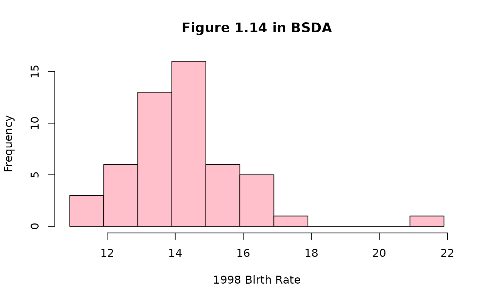

Data for Example 1.10
Birth
A data frame/tibble with 51 observations on three variables
a character with levels Alabama,
Alaska, Arizona, Arkansas, California,
Colorado, Connecticut, Delaware, District of
Colunbia, Florida, Georgia, Hawaii, Idaho,
Illinois, Indiana, Iowa, Kansas, Kentucky,
Louisiana, Maine, Maryland, Massachusetts,
Michigan, Minnesota, Mississippi, Missour,
Montana, Nebraska, Nevada, New Hampshire, New
Jersey, New Mexico, New York, North Carolina, North
Dakota, Ohio, Oklahoma, Oregon, Pennsylvania,
Rhode Island, South Carolina, South Dakota,
Tennessee, Texas, Utah, Vermont, Virginia,
Washington, West Virginia, Wisconsin, and Wyoming
live birth rates per 1000 population
a factor with levels 1990 and 1998
National Vital Statistics Report, 48, March 28, 2000, National Center for Health Statistics.
Kitchens, L. J. (2003) Basic Statistics and Data Analysis. Pacific Grove, CA: Brooks/Cole, a division of Thomson Learning.
#> #> The decimal point is at the | #> #> 11 | 015 #> 12 | 223479 #> 13 | 0012466888999 #> 14 | 0001222334567788 #> 15 | 023678 #> 16 | 00248 #> 17 | 3 #> 18 | #> 19 | #> 20 | #> 21 | 5 #>hist(rate1998$rate, breaks = seq(10.9, 21.9, 1.0), xlab = "1998 Birth Rate", main = "Figure 1.14 in BSDA", col = "pink")